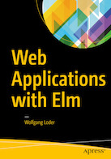

<div class="page-content">
    <div class="mdl-grid">
        <div class="mdl-cell mdl-cell--6-col mdl-shadow--2dp" style="background-color: whitesmoke">
            <div class="mdl-grid">
                <div class="mdl-cell mdl-cell--4-col">
                    
                </div>
                <div class="mdl-cell mdl-cell--8-col" style="padding-left: 10px;">
                    <div class="mdl-card__title-text">Available now !</div>
                    <div class="mdl-card__supporting-text">
                        <p>This book gives you an overview of Elixir and its parent language Erlang. It also explains concepts that underpin these languages like <i>Higher Order Functions, Recursion, Actor Model</i> and others.</p>
                        <p>Get the book <a href="http://www.apress.com/gp/search?query=Wolfgang+Loder">here</a> !</p>
                    </div>
                </div>
            </div>
        </div>
        <div class="mdl-cell mdl-cell--6-col mdl-shadow--2dp" style="background-color: whitesmoke">
            <div class="mdl-grid">
                <div class="mdl-cell mdl-cell--4-col">
                    
                </div>
                <div class="mdl-cell mdl-cell--8-col" style="padding-left: 10px;">
                  <div class="mdl-card__title-text">Available Summer 2017 !</div>
                  <div class="mdl-card__supporting-text">
                    <p>Elm is a functional language for web applications. This book leads you from installation to application development and integration with JavaScript frameworks.</p>
                    <p>You can see sample chapters <a href="https://github.com/kujua/webapplications-with-elm-beta-access">here</a>.</p>
                    <p>More info about the book <a href="http://www.apress.com/gp/search?query=Wolfgang+Loder">here</a> !</p>
                  </div>
                </div>
            </div>
        </div>

        {% assign sorted_posts = (site.posts | sort: 'sortorder') %}
        {% for post in sorted_posts limit:12 %}
            {% unless post.ignoreall == 1 %}
                <div class="mdl-card mdl-shadow--2dp mdl-cell mdl-cell--4-col mdl-cell--4-col-desktop mdl-cell--4-col-tablet  mdl-cell--12-col-phone">
                    <div class="mdl-card__title" {% if post.photo-front-url %} style="background: url('{{ post.photo-front-url }}') center/cover;" {% endif %}>

                    </div>
                    <div><h2 class="mdl-card__title-text">{{ post.title }}</h2></div>
                    <div class="mdl-card__supporting-text">
                        <span>{{ post.date | date: "%b %-d, %Y" }}</span>
                        <p>{{ post.excerpt }}</p>
                    </div>
                    <div class="mdl-card__actions mdl-card--border">
                        <a class="mdl-button mdl-button--colored mdl-js-button mdl-js-ripple-effect"
                           href="{{ post.url | prepend: site.baseurl }}">
                            Read More
                        </a>
                    </div>
                    <div class="mdl-card__menu">
                        <button class="mdl-button mdl-button--icon mdl-js-button mdl-js-ripple-effect" id="post-{{ post.id }}">
                            <i class="material-icons">share</i>
                        </button>
                        <ul class="mdl-menu mdl-js-menu mdl-menu--bottom-right" for="post-{{ post.id }}">
                            <li>
                                <a target="_blank" href="https://www.facebook.com/dialog/share?app_id={{site.facebook_app_id}}&display=page&href=https://{{ site.url }}{{ post.url }}&quote=New blog post: {{ post.title }}"
                                   class="mdl-menu__item">Facebook</a></li>
                            <li>
                                <a target="_blank" href="https://twitter.com/share?text=New blog post: {{ post.title }}&url=https://{{ site.url }}{{ post.url }}&hashtags={{post.hashtag1}}&via={{ site.twitter_username }}"
                                   class="mdl-menu__item">Twitter</a></li>
                            <!--<li><a target="_blank" href="https://plus.google.com/share?url={{ post.url | prepend: site.baseurl }}"-->
                                   <!--class="mdl-menu__item">Google+</a></li>-->
                        </ul>
                    </div>
                </div>
            {% endunless %}
        {% endfor %}
    </div>
</div>
